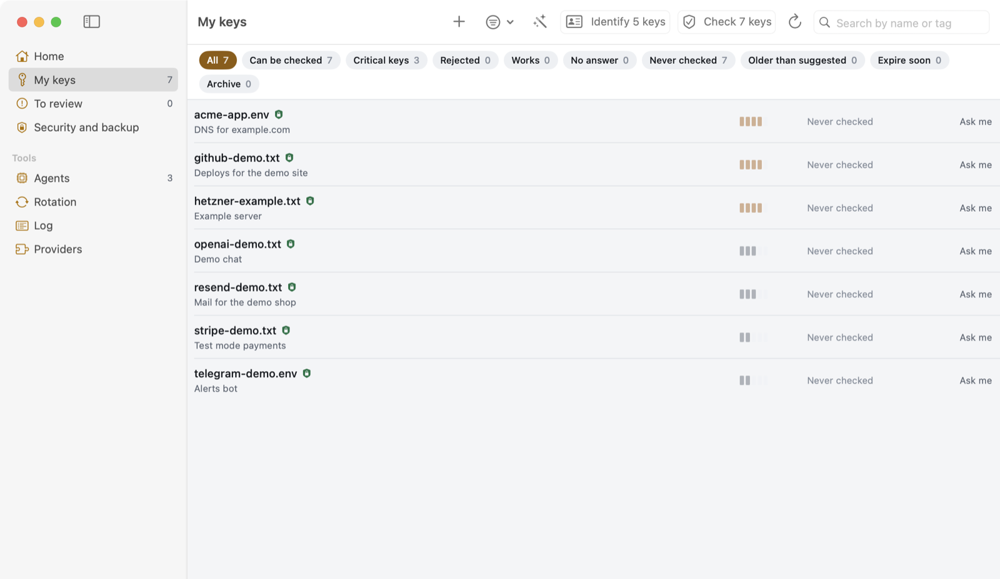
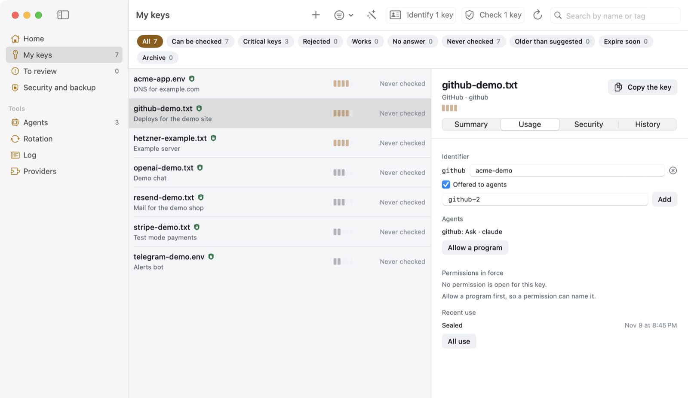
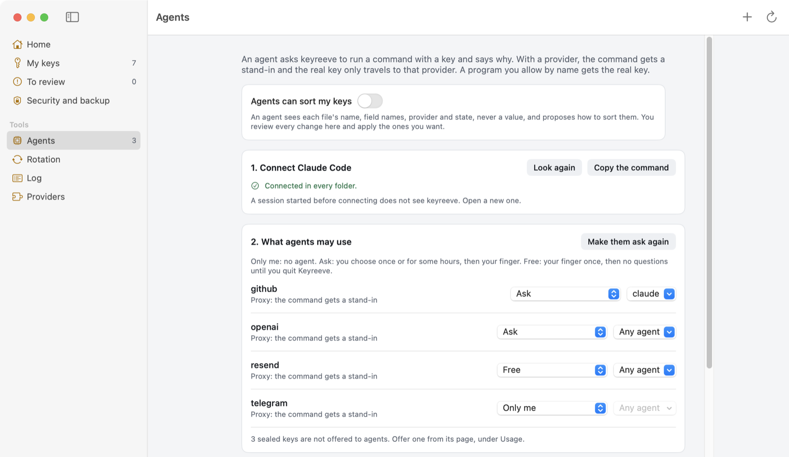
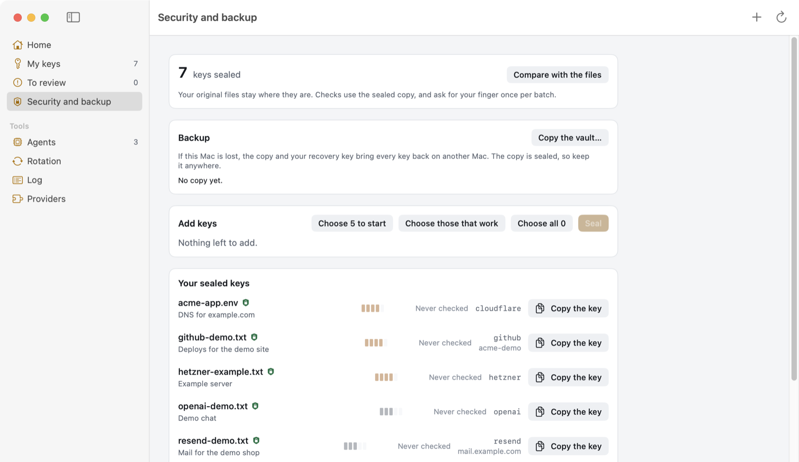

A key vault for your Mac that agents can use without seeing the keys
keyreeve seals your API keys on your own Mac, checks with each provider that they still work, and lets an agent run a command with a key it never holds. It is free and open source.

My keys. Every name and value in these pictures is made up.
Early. Sealing, checking and agent access are used every day on one Mac. Rotation passes the simulator and has not run against a real provider yet. There are no prebuilt downloads.
How an agent uses a key without seeing it
The agent asks to run a command with a key. The command gets a stand-in of the same shape, and a local proxy puts the real key only on requests to that provider's hosts.
The swap happens in headers and Basic passwords, and in the address only for a provider that takes its key there, such as Telegram. A body keeps the stand-in, so a tool that sends its key in a body fails and leaks nothing.
What agents can see
You choose which keys agents may know about. The rest do not exist for them.

A key's page, Usage tab: offered to agents, at the level Ask.
Who decides
Each offered key has a level, and only you set it, in the app. Your fingerprint is the answer.
Quitting Keyreeve, or Lock everything in the menu bar, ends every permission at once. Every yes, no and refusal goes in a log with the agent's reason.

Agents: what each agent may use, and how.
Agents connect over MCP with keyreeve-vault mcp. They get list_keys, use_key, request_access, run_with_key and rotate_key, and while you allow it, inventory and propose to help sort a folder of loose keys. None of them returns a value.

Security and backup. Each sealed key is a standard age file, so you can open it without keyreeve.
Install
You need macOS 14 or later, the Command Line Tools and Rust. The build is not notarized, so macOS warns you the first time.
git clone https://github.com/carlostapiacl/keyreeve
cd keyreeve
app/build-app.sh
ditto app/dist/Keyreeve.app /Applications/Keyreeve.app
open /Applications/Keyreeve.app
After the first copy, each run of build-app.sh updates the one in /Applications, and reopens Keyreeve if it was open.
Recipes
Everything keyreeve knows about a provider lives in one YAML file, and the app knows no provider by name. A recipe is data and cannot run code. It talks HTTPS only to the hosts it lists. keyreeve ships 33 recipes, and the most useful contribution is one for a provider you use.
Security
keyreeve guards keys. It is not a sandbox, and a program running as you can do what you can. The vault's code has had no outside review. The threat model lists what it protects against and what it does not. To report a vulnerability, use private reporting.
Read more
README: the first five minutes, levels and agent tools.
Reference: the vault from a terminal, keys.toml, SSH keys, recipes and rotation.